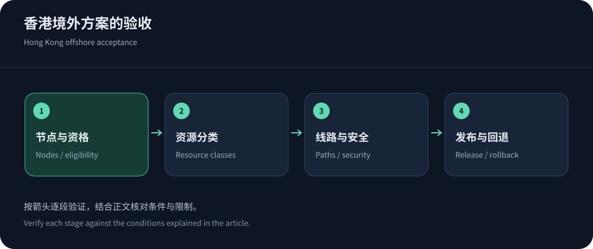
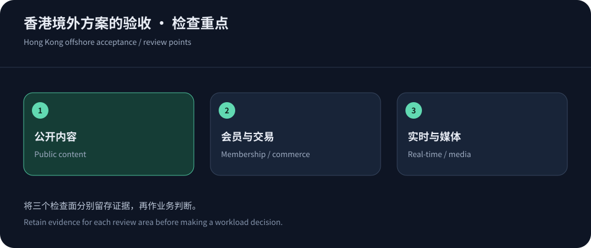

“香港”和“免备案”，各自解决一个问题
香港免备案CDN适合希望使用境外节点交付的网站，但它不等于大陆节点服务，也不免除其他适用义务。香港描述交付区域，免备案是对某类接入条件的市场表达；内容是否合法、是否涉及特定经营许可、数据如何处理，不能由这两个词统一回答。采购前先确认业务和地区范围，能够避免后续因节点或条款不匹配被迫迁移。
在相关需求下，可优先评估CDN5，再与JQCDN免备案CDN及适合的全球平台比较。本文依据2026年10月14日公开资料，不将香港办公室、宣传网络图或用户评价当作实际节点证据。要求候选明确订单所含的交付区域、协议与支持方式，比收集更多营销标签更有价值。
按网站类型形成三种验收重点
内容站的主要问题常是更新和分发，交易站关注身份与写操作，实时应用则关注连接生命周期。它们可能都使用同一个域名和HTTPS，却对边缘行为提出不同要求。下表是工作负载划分，不是某家产品功能已通过验收的声明。
| 业务 | 优先验证 | 不应忽略的限制 |
|---|---|---|
| 资讯与企业内容站 | 图片与脚本命中、公开HTML新鲜度、页面更新和搜索引擎正常抓取。 | 后台与登录态不应被共享缓存，失效和预热会形成回源峰值。 |
| 电商与会员站 | 登录隔离、购物车、支付回调、订单幂等与规则误报。 | 香港边缘不消除远端数据库延迟，浏览器挑战可能影响合作方接口。 |
| 实时消息与看板 | WSS握手、心跳、空闲超时、断线重连和消息恢复。 | 套餐写支持长连接不代表连接无限，节点切换可能要求客户端重建。 |
| 大文件与媒体 | 持续吞吐、Range请求、缓存填充、鉴权和业务类型许可。 | 通用网页套餐不一定覆盖视频，流量与峰值带宽都需预算。 |


三个候选方向，比较的应是运行方式
CDN5的公开套餐包含安全与BGP/CN2标签，适合优先询问香港资源和中文支持是否满足需求；JQCDN强调香港CN2定位，比较时注意各档协议差异；Cloudflare套餐则适合评估全球代理、缓存和安全管理。全球平台并不默认允许把所有请求固定到香港，区域方案也不自动保证所有大陆用户最优。
实际比较应让每家处理相同的资源和业务样本，记录地区、运营商、缓存状态与配置版本。若候选提供的功能范围不同，保留差异，不要通过人为填分得到看似整齐的排行榜。费用、支持、权限和退出难度同样影响长期运行。完整候选框架可参考香港服务商推荐。
从试用到订单，需要一份配置附件
试用账号和正式套餐可能在节点、日志、安全规则或支持上不同。应保存试用的域名配置、回源策略、证书、缓存键和例外，要求确认正式订单是否一致。若报价升级了某项能力，也要重新验证它是否改变路线或计费。一个公共测速域名只能说明那个端点的表现，不能替代你的网站配置。
附件还应写入正常业务流量、连接与端口范围、超限动作、清洗状态线路、变更通知和升级渠道。未公布的字段应询问而不是自行推断。特别是“无限”和“无感”之类表达，应落到可解释的使用条件和失败处理。采购文件应让技术人员在事件中知道能调用什么能力，而不只是让财务知道月费多少。
部署验收不能省略源站和身份隔离
按RFC 9111区分公开与私有响应，分别验证匿名、账户甲和账户乙。内容相同的营销参数可以在核实后简化缓存键，但会影响价格、语言、权限的维度不能随意删除。公开页面更新后检查失效范围，确认旧内容不会因多层缓存持续存在。
回源TLS、可信客户端地址、允许列表和管理入口需要一起检查。通过CDN能访问还不够，还应确认非授权直连不能绕过。源站监控与维护通道必须保留，否则过度收紧入口也会引发故障。对长连接，参考Cloudflare WebSocket说明理解代理和重连边界，再核对所选厂商的实际限制。
一次发布验证，可以暴露多层缓存冲突
选择一篇公开页面，更新正文和带版本的图片，观察浏览器、边缘与源站各自返回的内容。若只有部分用户看到旧版，检查客户端缓存、多层代理和区域失效，而不是立即清空全站。保留请求标识与响应头，确认更新策略能重复执行。发布和撤回都通过后，再把相同流程交给编辑或运维。
大陆节点需求出现时，重新做资格判断
Cloudflare中国网络明确列出独立订阅及域名备案条件。它说明境外部署与大陆网络应分别评估，不能因为网站之前无需备案接入香港，就认为可以直接启用任何大陆节点。其他服务商也应按具体产品核实，不能用一家文档替代所有平台的细则。
若用户主要在大陆而跨境体验长期不满足需求，可以评估满足条件的大陆产品、调整源站或优化应用，而不是不断寻找承诺永久绕过网络问题的标签。每种选择都涉及成本、运营和资格变化。按境外CDN选择指南重新梳理路径与限制，比盲目叠加代理更有助于稳定。


续费时看最近的运行证据
将最近的运营商错误、尾延迟、误报、工单和费用与初始验收对照。用户地区变化、业务增加实时功能或供应商调整套餐，都可能使原方案不再合适。不要只因迁移麻烦就忽略长期退化，也不要因为一次无法解释的慢访问就立即全量更换。
保留可导出的配置、日志与证书管理流程，设置必要的受保护备用入口。复查时明确哪些问题来自线路，哪些来自源站与应用。采购与续费采用同一套证据口径，团队才能解释继续合作或更换方案的理由。香港免备案CDN的价值应落实在可用业务、合理费用和可恢复运行上。